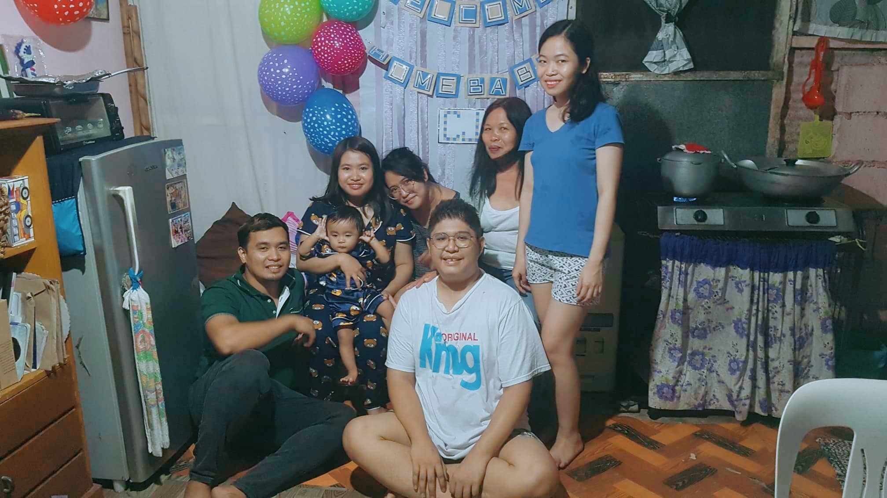
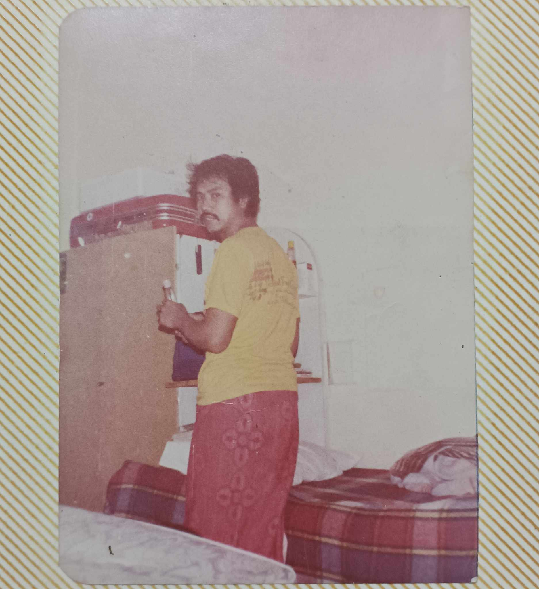
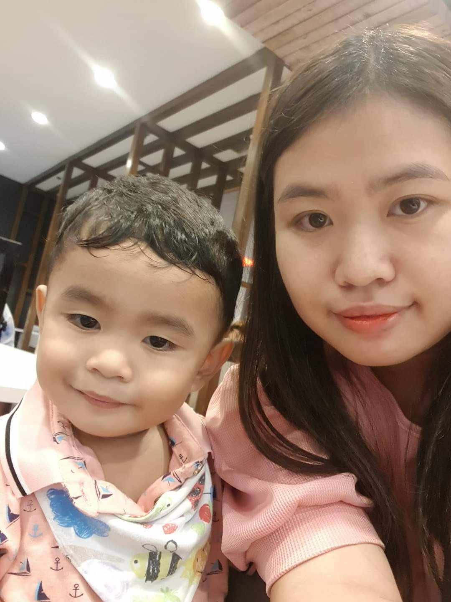
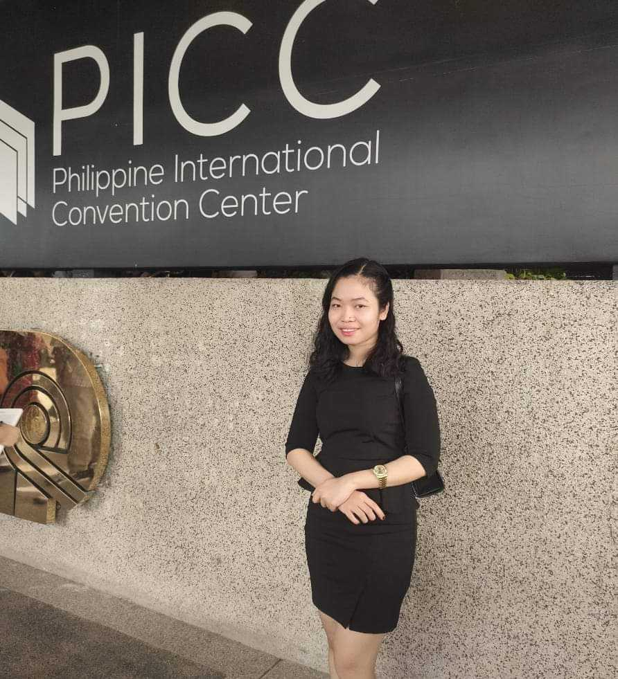
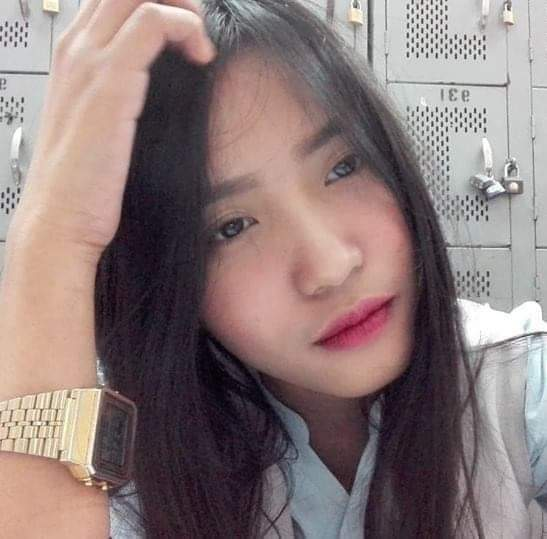

My Family
"De jesus Family"
This photo was taken last year on June 03, 2022. It was the most recently family picture we have. Although I was not in the picture because i was the one who took the shot. We just arrived in Imus at that time, we went to cebu to accompany my oldest sister together with her baby, my nephew to finally settle here in Cavite.
My Father
This photo was from our album. This is my father Julio De jesus, back when is is still at Saudi Arabia. Unfortunately i never really knew him. He died when i was a one year old baby due to heart attack. But almost every elder people in our barangay knew him and his good dids. I can say that my father is really a good man and very loving and i will treasure that forever.
My Mother

This photo was also from our album. My mother Julieta De jesus holding my second sister who's barely a 2 month old on our backyard. My mother was only 3rd year highschool when she stopped and went here in Cavite to find a better fortune, to find a job because life is very hard at that moment. Then she met my dad and they fell inlove and settle in Imus. She is very hardworking and a very good mother. She raised the four of us all on her own. She became a barbeque vendor, labandera at taga-plantsa and also a maid just to sustain our everyday needs and school fees. She is also a barangay tanod here in Bayan luma VI for 13 years and still counting.
My Oldest Sister
This photo was taken this year on august 2023. It's my oldest sister Juliepearl De jesus together with my nephew, her baby named Charles jacob Libron. My sister was an IT graduate and already have a family at the age of 26. She always spoiled me with pasalubong back in the day. She's generous and kind.
My Second Sister
This photo was taken this year on January 2023. My second sister Freszha De jesus managed to pass LET in her first attempt. She is an Education graduate major in English. She is smart, practical and soft-hearted person.
My third Sister
This photo was taken on year 2017 at SM where she used to work before. Her name is Erica Joy De jesus, She's also smart and artistic and she loves writing poem and reading books. She's currently 2nd year college, studying at CEU, she's persuing to be an opthalmologist.